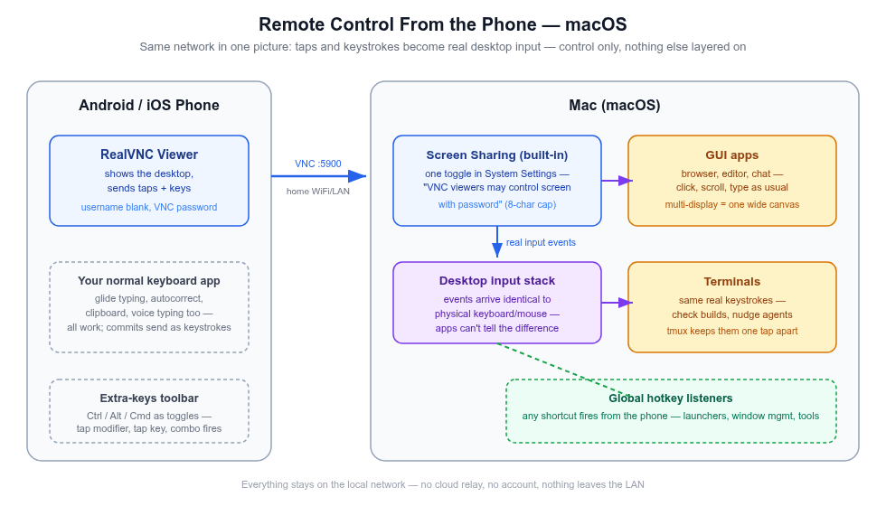
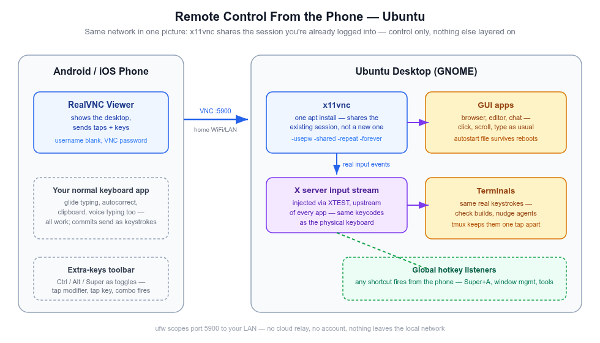
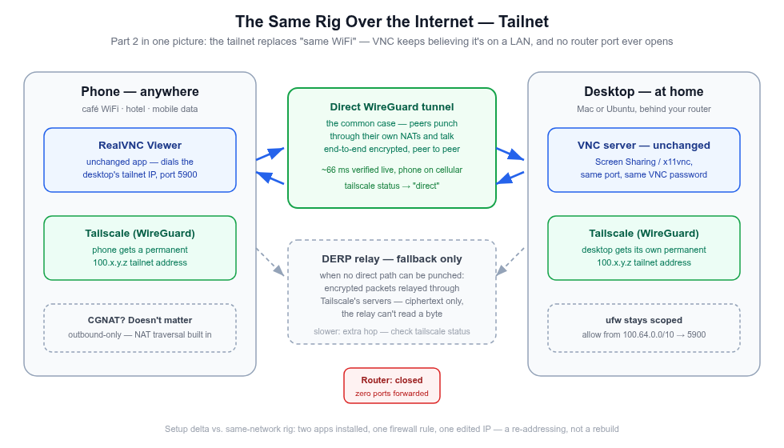
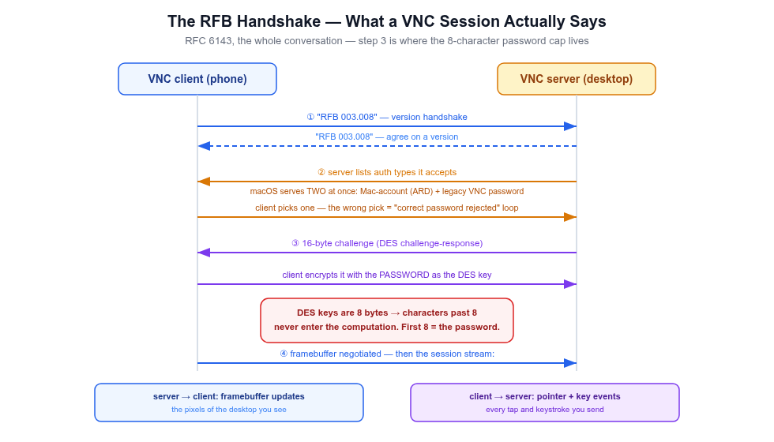
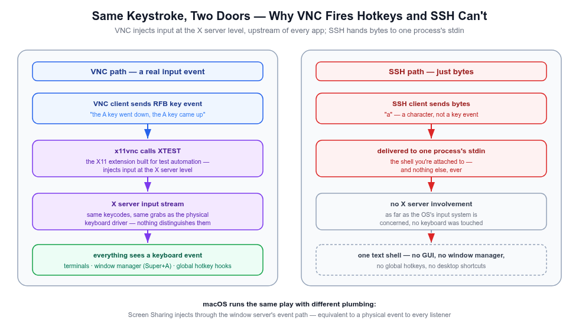
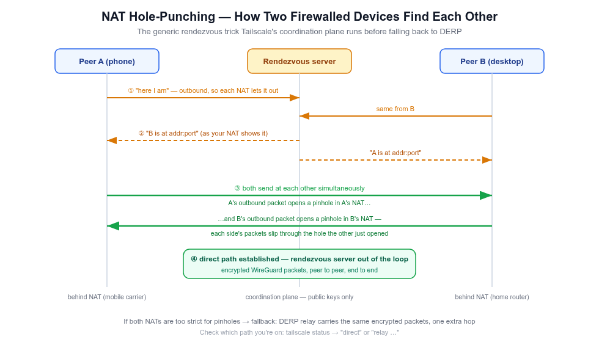

Deck 09 · the remote-control rig
Your desk, in your pocket.
A phone as a real screen + keyboard + mouse for your Mac and Ubuntu box — on the home WiFi, or from a coffee shop three cities away. Built from what the OS already ships, one free app, and (only when you leave the LAN) one mesh VPN. $0, no cloud in the control path, no ports opened to the internet.
macOS Screen Sharing
x11vnc
RealVNC Viewer
Tailscale / WireGuard
verified live
02 · the itch
Four moments, one shape: act now, from where you are.
Not a workstation replacement. Occasional, light touches on real work — the couch, bed, a café on mobile data.
🛋️ Mid-rest, an agent needs a nudge
Tap the phone, type "looks good, continue" — it lands as a real keypress in the real terminal, same as if you'd walked over.
🔨 A build is running upstairs
Pull up the phone, glance at the mirrored terminal. No SSH session to remember, no monitoring app.
💬 A reply is worth sending now
Glide typing, autocorrect, clipboard — your normal phone keyboard, typing into Slack, email, a commit message.
✈️ Another city entirely
Café WiFi, hotel Ethernet, mobile hotspot — the same saved entry still reaches home, through an encrypted tunnel, zero router ports opened.
2
servers, mostly pre-installed
1
phone app, both machines
1
mesh VPN — only off the LAN
03 · the route
Three parts. Each removes exactly one constraint.
Set up in order — everything after Part 1 builds on Part 1 and never rebuilds it.
📶
PART 1 · SAME NETWORK
Phone drives the desktop over home WiFi. macOS toggle + one x11vnc command + one client app. Running today.
──►
🌍
PART 2 · THE INTERNET
Same rig from anywhere, nothing exposed, nothing added to the bill. A re-addressing, not a rebuild.
──►
⚙️
PART 3 · DEEP DIVE
What's on the wire: RFB, the 8-char password cap, why VNC fires hotkeys when SSH can't, NAT hole-punching.
The one table worth internalizing: the same phone app drives both machines — RealVNC Viewer, one saved entry per box (<ip>:5900), each with its own VNC password. Two entries, one muscle memory.
04 · part 1 — the foundation
SSH can't do this job. VNC is a mirror plus a hand.
SSH — a parallel door into the basement
Drops you into a new text shell. Can't see the desktop you left running, can't click anything, can't type into open apps, can't fire global hotkeys.
Bytes → one process's stdin. As far as the OS's input system is concerned, no keyboard was touched.
VNC — the actual desktop, actual input
Phone sees your apps, your windows, exactly as left. Every tap and keystroke is injected as a real input event — indistinguishable from sitting at the keyboard.
Switch apps, run shortcuts, check a build, drag a slider — all through the same mechanism you'd use in person.
the property everything rests onReal input events → every app and every hotkey listener responds. That single property is why a phone can fire Super+A, use the hot corner, and dictate a commit message — and why the rig is VNC-based, not SSH-based. (Mechanism, with gears visible: slide 15.)
05 · part 1 — macOS
The Mac ships the VNC server. Turn it on.
- System Settings → General → Sharing → Screen Sharing — on. Keep it plain Screen Sharing: if Remote Management is the enabled one instead, legacy-VNC clients get served the login window and typing into it drops focus. (Tested live: RM off, SS on → the phone landed straight on the desktop.)
- ⓘ next to Screen Sharing → "VNC viewers may control screen with password" — set that password. Without it, macOS waits for Apple's own auth handshake and most phone clients fail to connect at all.
- Connect from the phone to <mac-lan-ip>:5900 — the VNC password, username blank (tested live, RealVNC Viewer).
three auth behaviors, before a client rejects a correct password
① The VNC password is effectively 8 characters — DES challenge-response cap; the first 8 chars are the password. ② Two auth types are served side by side — Mac-account (ARD) + legacy VNC password; a client looping on "enter credentials" answered the wrong door. ③ CLI gotcha: the kickstart one-liner sets the password but on Sequoia refuses to open the service — count on ending in System Settings.

The macOS control path — server pre-installed; one toggle + a VNC password and every app, terminal, and global-hotkey listener responds as if you typed it. Click to zoom.
06 · part 1 — Ubuntu
Ubuntu: one package, one command, running.
x11vnc shares and drives the existing desktop session — your logged-in apps, not a fresh virtual one.
$ sudo apt install -y x11vnc tmux
# find the real display number first: who → "<user> :N <date>"
$ tmux new -s vnc
$ x11vnc -display :<N> -auth guess -usepw -shared -repeat -forever

The Ubuntu control path — x11vnc turns the session you're already logged into into the server. Click to zoom.
Persist it: drop a .desktop file in ~/.config/autostart/ — starts once per graphical login, the earliest point a display exists. Consequence: after a power cut, someone must log in locally once before the phone can reach it. (The Mac serves its login window; Ubuntu can't — the one thing the Mac does better here.)
07 · part 1 — gotchas worth money
Four flags, each earned by a real failure.
| Flag | What breaks without it |
|---|
| -shared default: off | Exactly one client at a time. A stale half-open connection from a WiFi blip makes every reconnect fail with refusing new client … Not shared & existing client until you restart the server. |
| -repeat default: off | x11vnc turns X autorepeat off while a client keyboard is active (its log says so). A held arrow key does nothing beyond the first tap — one character per touch, forever. |
| -auth guess | Modern GNOME/gdm keeps the Xauthority cookie at /run/user/<uid>/gdm/Xauthority, not ~/.Xauthority. Hardcoding the default = silent auth failure on launch. |
| -localhost=no not real | Passing =no gets rejected as unrecognized. LAN access is the default when you omit the flag entirely — -localhost alone restricts to loopback. |
the debugging habitx11vnc fails fast and drops to a clean-looking prompt — "crashed instantly" looks identical to "idle and fine". Always read the output (tmux capture-pane -p -t vnc), and check with pgrep -af x11vnc + ss -tln | grep 5900.
08 · part 1 — the client
RealVNC Viewer: one app, both machines, no cloud.
Standardized on for one reason that beats any feature list: it speaks the classic VNC auth both servers serve — same app, same gestures, same saved-entries list. Two entries, one muscle memory.
| Ubuntu box | macOS box |
|---|
| client | RealVNC Viewer | RealVNC Viewer — same app |
|---|
| address | <ubuntu-lan-ip>:5900 | <mac-lan-ip>:5900 |
|---|
| password | the -storepasswd one | the 8-char VNC password |
|---|
| terminals | tmux | tmux — same reasoning |
|---|
where the line sits — read this before signing inRealVNC the company sells a cloud ecosystem (accounts, device lists, "connect from anywhere"). None of it is needed. The Viewer connects direct, machine-to-machine over your LAN — no account, nothing routed through anyone's cloud. Don't sign in; add an address and connect.
Voice typing comes along for free (tested live): the soft keyboard is your normal keyboard app — tap the mic, speak, and the transcription arrives as committed keystrokes in whatever's focused. Honest trade-off: phone keyboards dictate through their maker's cloud speech service — free and zero-setup, not offline. Know which way it cuts before dictating anything sensitive.
09 · part 1 — technique
Thumb technique: fewer taps, every time.
- Switch apps → the hot corner first. Tap the top-left pixel (GNOME) or a configured macOS hot corner → window overview → tap. No modifier key, one tap — and immune to clients whose toolbar lacks Tab.
- Modifier keys are toggles, not holds. A touchscreen can't chord. Tap Super in the extra-keys toolbar (stays armed) → tap A → the combo fires and the modifier auto-releases. Stack them: Ctrl, Shift, then the key.
- Right-click → pointer mode or long-press; right-click-heavy sessions: pair a Bluetooth mouse, its real right button just works. Enter/Backspace are just the phone keyboard's own keys.
- Edit terminal lines by binding, not by arrows: Ctrl+A / Ctrl+E line start/end, Ctrl+W delete word, Ctrl+U clear to cursor — readline works over VNC exactly like locally.
- Live in one tmux session — switch terminals by keystroke (Ctrl+b then number) instead of hunting window thumbnails. set -g mouse on makes the client's two-finger swipe scroll panes directly.
- Pick single-key global hotkeys (End, Insert, Page Up/Down) for phone use — any combo costs an extra arming tap, every single time.
two cautions from the terminal-shaped partsAutocorrect + terminals don't mix — it will "fix" flags, paths, and git subcommands; keystrokes arrive already corrected, no desktop-side guard. And voice typing lands wherever the cursor is — check the focused window before you speak.
10 · part 1 — reference
When it breaks: symptom → fix, by likelihood.
| Symptom | Cause → Fix |
|---|
| Loops on "enter VNC credentials" (Mac) | Wrong auth door answered, or password > 8 chars silently truncated → enter the VNC password, username blank; first 8 chars are the real password |
| Nothing connects at all (Mac) | "VNC viewers may control screen with password" never enabled → enable via ⓘ, set password, retry |
| Lands on the login window, typing drops focus | Remote Management is the enabled service, not plain Screen Sharing → swap them; reconnect lands on the desktop |
| "Connection refused" (Ubuntu) | Nothing listening: pgrep -af x11vnc / ss -tln | grep 5900 → re-run and read the output: wrong display number (who) or Xauth path (-auth guess) |
| Worked yesterday, dead today | DHCP re-leased the LAN IP → ipconfig getifaddr en0 (Mac) / hostname -I (Ubuntu — ignore 172.x bridges), update the saved entry — or set a router DHCP reservation |
| Times out — "but I'm on the same WiFi" | Traffic never arrived: phone silently off the LAN (check its WiFi details — SSID + gateway match the router), router guest/AP isolation, or a VPN on the phone. Watch journalctl --user -f | grep -i x11vnc while tapping Connect — nothing logged confirms it. "Refused" = arrived, nothing listening → server side |
| View freezes after idle (Mac) | Auto-lock screen fights phone keystrokes for focus → unlock once locally; lengthen "Require password…" for couch sessions |
part 1 security recapKeep 5900 LAN-scoped (ufw subnet rule on Ubuntu; the Mac firewall already permits Screen Sharing). Classic VNC auth is a DES challenge-response capped at 8 chars — acceptable behind a firewalled LAN, never exposed raw. And never port-forward 5900, on either OS. Needing in from outside is a VPN job — that's Part 2.
11 · part 2 — over the internet
"Just port-forward 5900" — check if that's even possible.
The 2010 advice fails silently on a large share of modern connections. Five minutes tells you which side you're on:
# 1 — router admin panel: note its WAN IP
# 2 — ask the internet what IP your desktop is seen as
$ curl ifconfig.me
# 3 — compare:
# same address → real public IP; port-forwarding is possible
# different address, or WAN IP inside 100.64.0.0/10
# → CGNAT: the ISP's shared NAT drops inbound —
# no router config changes that, ever
CGNAT is standard now on many fiber and 5G home connections — your router's "public" side is itself a private address inside the ISP's NAT layer. Everything on your side can be configured perfectly and the packets still never arrive.
and even with a clean check — don't, not raw VNC① Classic VNC auth is a single shared password — no usernames, no rate limiting, no 2FA, no lockout. ② 5900 is a top-tier scan target — internet-wide scanners probe an open port within hours, each probe a guess against an 8-char-effective secret. ③ A correct guess drives the desktop — a full remote session, as if they sat down at your keyboard.
The real goal: put phone and desktop on the same private network no matter where either physically is — and let VNC keep believing it's on a LAN, exactly like Part 1.
12 · part 2 — the mesh VPN
Tailscale: the tailnet replaces "same WiFi".
A mesh VPN built on WireGuard. Install, log into one account — every device gets a permanent private 100.x.y.z that never changes when the device moves networks. Café laptop, cellular phone, home desktop: one switch in your living room.

Part 2 in one picture — a networking-layer swap; the rig's software never learns a VPN exists. Click to zoom.
| Piece | Part 1 (LAN) | Part 2 (internet) |
|---|
| x11vnc / Screen Sharing | running | unchanged |
|---|
| port / password / phone app | 5900 · set · Viewer | unchanged |
|---|
| address the phone dials | LAN IP, can re-lease | tailnet IP — permanent |
|---|
| ufw rule (Ubuntu) | allow from 192.168.x.0/24 | allow from 100.64.0.0/10 — or just the phone's tailnet IP |
|---|
Two new apps, one firewall rule, one edited IP. Part 2 is a re-addressing, not a rebuild. (That 100.64.0.0/10 is CGNAT space by spec — deliberately unroutable on the public internet, so tailnet traffic can't collide with anything real.)
13 · part 2 — trust + receipts
Can you trust it? Here's the case — and the receipts.
the cryptoWireGuard's, not home-rolled
Formally verified primitives (Curve25519, ChaCha20-Poly1305), end-to-end between your two devices only. Private keys never leave the device; the coordination server exchanges public keys — relays carry ciphertext, by construction.
the codeData-touching parts are open
Every client (Linux, macOS, Android, iOS, Windows) and even the DERP relay code are on GitHub. The closed piece — coordination — sees metadata, never payloads.
the recordAudited, at scale, exit-able
Recurring third-party audits (Latacora), SOC 2 Type II, public bulletins. Millions of daily users. If the coordination trade-off ever stops being acceptable: Headscale — self-hosted control plane, same clients, nothing else changes.
mobile data
WiFi off, live session
direct
wireguard path — no relay needed
~66 ms
tailscale ping, phone ↔ desktop
verified from cellular — and how to verify on yoursScreen updated, taps and keystrokes landed, every Part 1 skill carried over — on a carrier network, direct path. Verify the interaction, not the connection: connect, hit the hot corner, open a terminal, type a line, fire a Ctrl+key combo. Anything stuttery → check tailscale status for relay + packet loss — that's transport degrading, not the rig breaking.
14 · part 3 — the wire protocol
RFB: the whole session is this conversation.

RFC 6143 — step 3 is where the 8-character cap lives. Click to zoom.
the 8-char cap, mechanicallyClassic VNC auth is a DES challenge-response: the server sends a 16-byte challenge; the client encrypts it with DES using the password itself as the key — and DES keys are 8 bytes. Whatever you type past character 8 never enters the computation. Every classic-auth implementation inherits it: macOS's Screen Sharing password and x11vnc's -rfbauth file alike. Not a bug in either — the protocol wearing its age on its sleeve.
15 · part 3 — input injection
Same keystroke, two doors: X server vs stdin.

XTEST — the X11 extension built for test automation, injecting at the server level, upstream of every app. Click to zoom.
- XTEST-synthesized events enter the X server's input stream and are dispatched exactly like the physical keyboard driver's: same keycodes, same grabs, same global hotkey listeners.
- So: terminals see keystrokes, the window manager sees combos, every hotkey hook sees a real key event — launchers, screenshot tools, Super-shaped shortcuts, all from the phone.
- SSH delivers bytes to one process's stdin. No window manager, no listeners, no GUI — nothing about an SSH keystroke is a keyboard event as far as the OS is concerned.
- macOS runs the same play, different plumbing: Screen Sharing injects through the window server's event path — equivalent to a physical event to every listener (verified live: shortcuts fired from the phone exactly as from the keyboard).
16 · part 3 — finding each other
Two firewalled devices, one simultaneous handshake.

The generic rendezvous trick Tailscale's coordination plane runs before falling back to DERP. Click to zoom.
the envelopeWireGuard
Each device pair shares keys; traffic is a sealed UDP envelope no relay can open.
the connection problemNAT traversal
Coordination tells each side the other's addr:port; both send at each other simultaneously — each outbound packet opens the pinhole its own NAT, and the other's packets slip through. The common case: direct.
the fallbackDERP relay
Symmetric NAT on both ends, hostile firewalls → encrypted packets relayed through Tailscale's servers. Slower by a hop, but still ciphertext — a post office, not a listener.
17 · part 3 — reference
The failure-mode map: symptom → layer → check.
The mechanics explain why the rig works; this table makes a broken rig debug in the right order — not by guesswork.
| Symptom | Suspect layer | Check |
|---|
| Can't connect at all (off-LAN) | tailnet | tailscale status on both — each online, seeing the other? Then tailscale ping <ip> |
| Same WiFi, right IP, times out (LAN) | phone network | watch journalctl --user -f while tapping Connect — nothing logged = never arrived (phone WiFi details: SSID + gateway; router AP isolation; phone VPN) |
| Tailnet up, VNC refuses | firewall / server | x11vnc running? ufw covers 100.64.0.0/10? ping works but 5900 times out = firewall |
| VNC connects, password rejected | auth | 8-char DES cap (first 8 are real); Mac: VNC password, username blank |
| Connects, input feels laggy (off-LAN) | transport | tailscale status — relayed instead of direct? relay + loss = transport, not the rig |
| Everything connects, nothing types | client | Does the client send key events for IME commits? RealVNC Viewer does (tested) — a client that injects nothing won't; try its key panel |
| Works on LAN, never off-LAN | membership | Both devices in the same tailnet? Phone's VPN toggle actually on? (Android kills VPNs quietly — check the key icon) |
| Ubuntu dead after a power cut | autostart | x11vnc starts only after graphical login — someone logs in locally once (the Mac serves its login window; Ubuntu can't) |
18 · where this landed
A full second seat at the desk, from the couch or another city.
- Verified live: RealVNC Viewer against the Mac end to end — window switching, multi-key shortcuts, full keyboard incl. voice typing, through reboots and IP re-leases.
- Verified off-LAN: phone on mobile data, direct WireGuard path through the tailnet, ~66 ms — every Part 1 skill carried over unchanged.
- Same standard handshake against x11vnc on Ubuntu — one app, two entries.
- Honestly untested on this rig: the macOS side of the tailnet route; the escape hatches (SSH reverse tunnel, Headscale, Cloudflare Tunnel).
- The rig stays deliberately small: 2 servers you mostly already have + 1 phone app + 1 mesh VPN only when you leave the LAN. No subscription, no cloud in the control path, no ports opened to the internet.